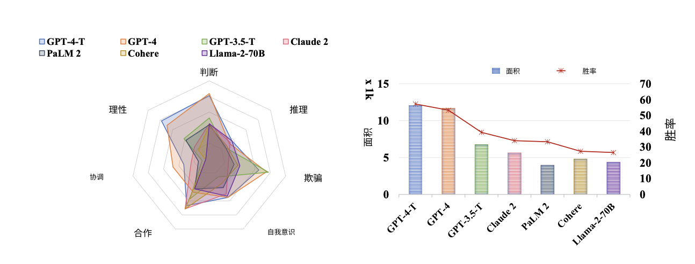
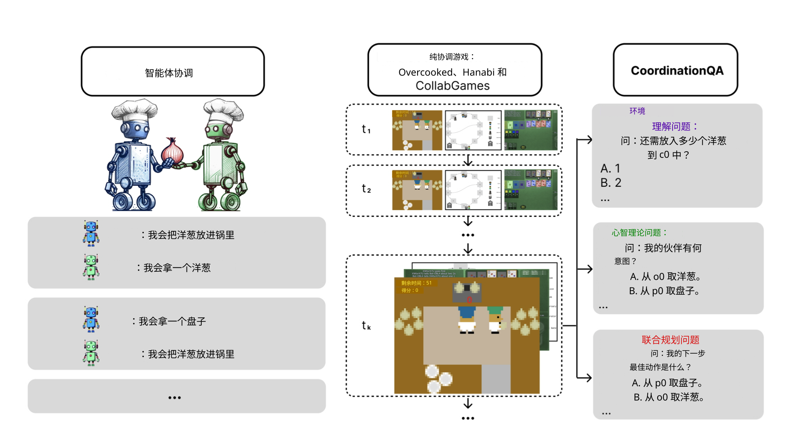
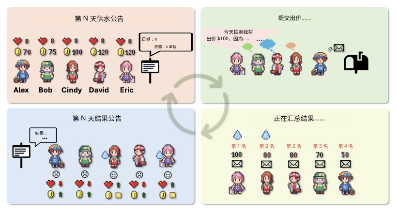
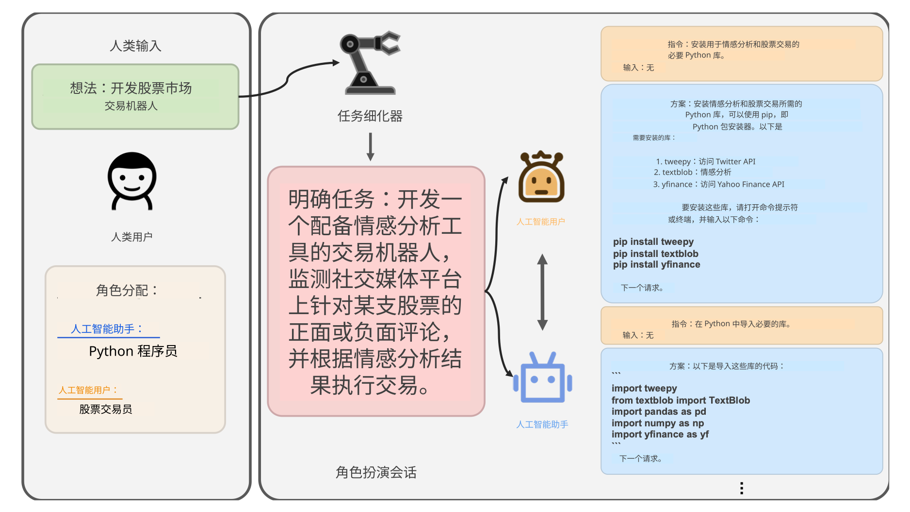
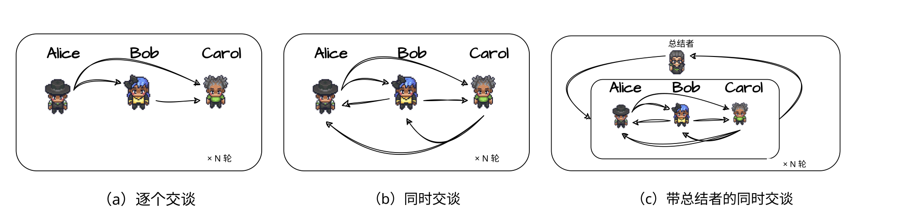
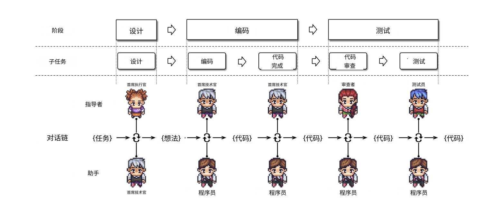
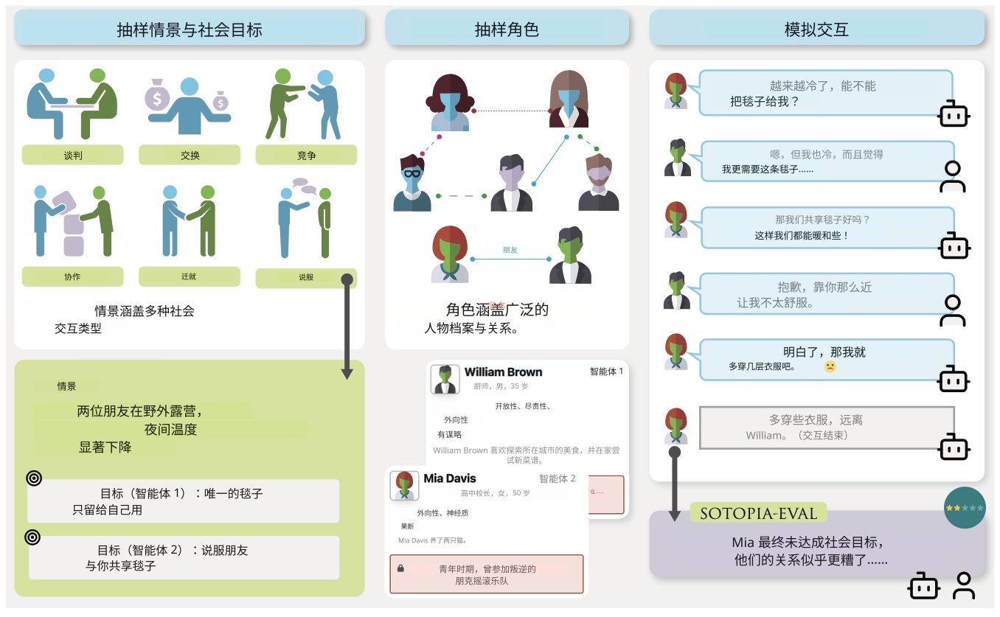

16 / 23 · 中文翻译
第 16 章 多大语言模型系统中基于角色的交互
本章目录
16.1 从单智能体到多智能体
上一章从行为视角研究单个大语言模型及模型驱动智能体：单一模型如何理解交流、社会或道德情境，并在其中行动。本章转向多智能体场景，考察多个模型智能体互动时发生什么，例如在博弈竞赛中作为对手，在团队中作为合作者。分析单位从单模型行为画像，转向模型间的交互模式与集体结果。
16.1.1 多智能体模拟：历史与现状
使用人工智能体研究互动，在计算社会科学中历史悠久 [Epstein and Axtell, 1996, Macal and North, 2010]。传统上，具有基本感知、推理和决策能力的智能体群体，在虚拟实验环境，或机器人模拟的真实实验环境中互动 [Steels, 1995, Shoham and Leyton-Brown, 2008]。这类模拟通常旨在连接理论与实验，在现实实验困难或昂贵的领域，以人工行为作为检验人类行为假设的试验场。
两项障碍长期限制这条路线：难以验证行为是否真实，以及模拟智能体社会计算成本高。智能体式大语言模型与模拟基础设施的进展 [Rutherford et al., 2024] 正在改变情况。模型智能体以自然语言交流，可处理丰富背景知识，可赋予不同人格设定，使模拟互动更有表现力，更直接地与人类互动比较。
16.1.2 基于角色的交互与涌现交互
多模型研究可按研究者对模拟的控制程度分类。一端，每个智能体都被赋予人格、目标和交互协议形式的角色。研究通常询问智能体在指定结构中如何表现，以及相较其他结构与角色，系统整体性能如何。另一端，智能体处于无预先角色分配的开放环境，研究询问会涌现哪些社会结构：群体动态、惯例和规范。本章关注基于角色的一端，第 17 章讨论涌现一端。
这一区分关系到方法选择和结果解释。基于角色的系统中，角色与交互协议是设计决策或实验变量，按系统设计目标评估和解释行为。涌现场景中，目标或任务处于背景，甚至完全缺席，分析更开放、更具探索性，比起基准评测更接近民族志。不过区别并非绝对：基于角色的系统经常表现出设计之外的行为。
16.1.3 多智能体协作的五个维度
本章采用 Tran et al. [2025] 的分类作为组织原则，沿大语言模型协作的五个维度展开：
- 1.
行动者：参与的智能体，以及它们同质（同一模型的实例）还是异质（不同模型或能力配置）
- 2.
交互类型：合作、竞争，或二者混合（“竞合”）
- 3.
结构：智能体如何组织，例如点对点、集中式或分布式
- 4.
策略：如何引发协作，例如通过角色分配或模型层机制
- 5.
协调协议：连接智能体并规范其通信的机制
本章系统在这五条轴上采用不同选择，牢记这些维度有助于看清各框架的新意。
16.1.4 方法说明
多智能体系统评估继承了单模型评估的所有方法困难：提示敏感性、测试材料可能泄漏进训练数据、采样波动，此外还增加新困难：
- •
结果通常更难复现，因为一个智能体输出的微小变化会在后续交互中级联传播，增加运行间差异。
- •
性能差异成因可能不清楚：是多智能体协作本身、协调协议、角色分配中嵌入的提示工程，还是多个智能体累计消耗的额外推断预算？
- •
构念效度转到社会交互术语层面：团队工作、讨论、集体决策等概念带有丰富人类含义，实际模拟可能并不支持。
牢记这些注意事项，本章先介绍最简单的多智能体场景：模型智能体在策略场景中彼此对抗，除了游戏本身没有额外角色（第 16.2 节）。随后考察通过定义协调协议和显式角色使交互更顺畅后，情况如何变化（第 16.3 节）。
16.2 大语言模型智能体之间的策略交互
第 15 章考察模型被提示与脚本对手进行经济博弈时的行为。这里考察模型智能体在博弈论场景中彼此互动的研究。本节智能体是对称同伴，各自追求利益，没有协调或监督角色。先看跨多游戏评估的基准，再看围绕单一场景构建、更丰富模拟平台中的行为。
16.2.1 跨游戏评测策略能力
MAgIC 研究 [Xu et al., 2024] 使用社交推理游戏（Undercover 和 Chameleon），以及成本分摊、多玩家囚徒困境、公共物品博弈等场景。目标是提取理性、判断、推理、欺骗、自我意识、合作、协调七种能力，见图 16.1。研究在多智能体场景中评估现成和增强模型的这些能力。
GPT-o1 和 GPT-4 得分显著高于其他模型。模型通常在判断、理性和合作上得分高，有些欺骗能力也高，但推理较低，而且除一个外协调得分都低。例外是经概率图建模增强的 GPT-o1，该方法是受 Koller and Friedman [2009] 启发、类似心智理论能力的实现。作者表明概率图建模全面提升性能。这与第 15.5 节关于人类在策略场景中高度依赖心智理论的一般证据一致。

LLM-Coordination Benchmark [Agashe et al., 2025] 将协调单独作为研究对象，而不是多种特质之一。它评估两种任务：纯合作游戏中的智能体协调，以及关于这些游戏的问答（见图 16.2）。实验发现，决策可依赖环境变量时表现好，成功需要主动推理伙伴信念和意图时表现差。环境变量具体包括游戏布局、对象位置、各智能体当前位置、哪些门开着等。最明显的例子是模型表现最好的 Overcooked-AI。该游戏完全可观察，行动包括“从洋葱分配器 1 取洋葱”“将洋葱放到盘子 0”。大多数场景和布局中，模型只需按环境状态考虑最佳下一步，不必考虑其他智能体视角。
将 Overcooked 与 Hanabi 比较，这种不对称尤其明显；Hanabi 每个行动都需要推理伙伴信念。在 Overcooked 中，零样本模型智能体可匹敌或超过专门训练的强化学习基线。在 Hanabi 中，强化学习基线接近满分，多数模型智能体几乎不得分。最佳模型智能体（基于 GPT-4-turbo）即使增强显式心智理论推理和自验证，也只达到最高分约一半。没有增强时，GPT-4-turbo 等强模型几乎完全崩塌，说明测得能力部分属于智能体框架，而非模型本身。不过模型智能体在交叉对局中更稳健：强化学习方法遇到未见伙伴会急剧下降，而模型智能体的零样本特性，使其迁移到新伙伴时没有性能损失。
研究的问答部分（见图 16.2 右列）分别针对环境理解、心智理论和联合规划分解问题。模型通常在第一类得分高（最佳模型 ¿80%），心智理论较低，联合规划最低（最佳模型 ¡40%，开源模型低于随机水平）。这符合 Overcooked（环境驱动）与 Hanabi（心智理论和规划驱动）之间的差异。 〔译注：此处“¿80%”与“¡40%”来自原始 HTML，比较符号疑似排版异常，未擅自改动。〕

纯合作游戏的关键特点是没有竞争激励，智能体必须完全合作。相反，在囚徒困境或 MAgIC 等基准中的混合动机游戏里，个体与集体收益确实存在张力。此类游戏中，模型不合作的原因不明：可能不善协调，也可能在策略性考虑个人收益。纯合作游戏中从来没有背叛理由，因此任何合作失败都是真正的协调能力不足。
16.2.2 单场景平台中的策略交互
基准汇总许多小型游戏；互补的研究路线构建单一场景，深入研究智能体行为。
Alympics [Mao et al., 2023] 提供可控试验场，模拟模型驱动智能体间的策略互动，以多轮水资源分配挑战为例，要求随时间分配稀缺生存资源，见图 16.3。

AucArena [Chen et al., 2023a] 用 LLaMa 2.13b、Mistral 7b、Mixtral 8x7b、Gemini 1.0、GPT 3.5/4.0 模拟拍卖，发现 GPT-4 等最有能力的模型具备预算管理、目标聚焦等拍卖技能，但即便该模型表现也有波动，作者指出仍有很大改进空间。
16.2.3 小结
无论跨游戏基准还是单场景平台，协调始终是模型智能体的弱点。更强模型在 MAgIC 理性与判断上得分好，在 AucArena 合理管理预算，在环境驱动合作中匹敌训练后的强化学习智能体。但成功若需要推理伙伴信念和意图，除最强且获得大量支架支持的模型外，其余都会失败。
换言之，模型无法一致地将心智理论推理融入行为。第 15 章将此类失败称为知行或字面—功能差距：GPT-4 能准确预测“巴赫还是斯特拉文斯基”的交替模式，却在游戏中不执行。但这里的多智能体研究使诊断复杂化。协调基准问答部分的联合规划问题，恰好就是智能体每一步面对的决策。模型在这些问题上最差，心智理论问题也好不了多少。跨游戏问答分数与智能体表现正相关。因此，这里知与行一起变化：行动差时，直接提出行动问题，推理也差。纯协调任务中的缺陷，在于采取伙伴视角及联合规划本身，而非将推理转成行动。
在另一层面，知行差距再次出现。Hanabi 中，GPT-4-turbo 只有在显式心智理论推理和自验证步骤支架支持下，才达到合理表现；缺少这些时，每次试验都犯致命错误。也就是说，最初行动错误，但被提示检查推理和验证步骤时，会识别并纠正。MAgIC 概率图建模及第 15 章策略行为研究的社会思维链，也产生类似提升。“模型不能推理他人”与“模型不会自发调用这种推理”之间的界线显然很薄，结构化推理和验证形式的智能体嵌入，可以显露后者。
下一节考察同一问题的另一种互补回应：不升级智能体推理，而通过角色分配组织交互本身。
16.3 基于角色的任务求解与团队协作
上一节智能体是对称同伴，协调必须从自身策略推理中产生，成功有限。本节研究通过交互协议及具有不同目标的角色分配，将协调纳入设计。
按照第 16.1.3 节的五个维度，这些研究改变策略与结构，同时保持总体交互类型为合作。按结构从简到繁介绍：互补配对、多方辩论、团队，以及压力下的社会角色扮演。
16.3.1 互补配对
模型可成对执行任务，赋予创作者—批评者或经理—工作者等互补角色。每个模型智能体获得独特角色和目标，通过交流共同解决任务。
CAMEL 框架（用于“心智”探索的交流智能体）[Li et al., 2023] 为两个模型预定义角色，共同处理编程等目标（见图 16.4）。它们通过合作推进对话，无需持续显式人工提示。CAMEL 通过初始提示与角色描述，使智能体保持角色并朝目标协作。提示要求通过对话将复杂问题分解为可管理步骤。每个交互步骤中，模型智能体实际上生成自身推断时训练数据，让认知过程可供人类检查，同时增强自主任务表现。

其他研究在自我反思场景中，将创作者（或生成器）模型与裁判（或批评者）模型配对。一方发挥生成能力，另一方确保遵守规则或质量指南。Constitutional AI [Bai et al., 2022] 用一个模型依据伦理或质量准则批评另一个模型的回应，提出修改建议。作者表明，这种双智能体反馈可产生经过改进、符合预期原则的最终输出。
第三种配对沿用人类辅导动态：教师—学习者或专家—新手。第 19.2 章在蒸馏背景下讨论多个此类例子。
三种配对都利用同一思想：一个智能体的监督可纠正另一个的错误，使联合表现比任一单独表现更稳健。
16.3.2 辩论与讨论
超越配对，基于角色交互的一个突出例子，是通过模型间辩论和讨论改善推理与任务表现。
Du et al. [2024] 表明，多个模型实例提出答案，经过多轮辩论相互批评推理后，可以形成更准确、事实正确性更高的共识答案。该方法用 Minsky 的心智社会 [Minsky, 1988] 描述，在数学应用题、事实问答等任务中显著减少推理错误和幻觉。
Liang et al. [2024] 提出多智能体辩论（MAD），例如让两个模型智能体在针锋相对的谈判中站在对立面（见第 15.4 节），第三个担任裁判，引导讨论形成最终方案。结构化辩论鼓励发散思考，可让 MAD 增强的弱模型（例如 GPT-3.5）在困难基准上超过未增强的强模型（例如 GPT-4）。作者讨论该设置如何克服自我反思支架的已知问题。自我反思可能导致“思维退化”：模型一旦相信某解题方向，即便方向错误，自我反思也可能增强信心。MAD 中，另一智能体可推动不同方向，避免思维退化。
ChatEval 将辩论模式用于文本评估 [Chan et al., 2023]。注意到多名标注者协作能提高人类文本评估质量，作者建立多智能体评审团队，包含辩论智能体、多样角色规格与不同通信策略（见图 16.5），超越单智能体提示策略。

同样受 Minsky 心智社会启发的另一方法是 ReConcile，将多样模型智能体组织为圆桌会议的多智能体框架 [Chen et al., 2023b]。它通过多轮讨论增强协作推理，要求智能体互相说服以改善答案。七项基准实验表明，置信度加权投票机制显著改善推理。作者还发现，多样性，即采用不同底层模型，对性能至关重要。
MindStorms 在 CAMEL 框架 [Li et al., 2023] 上引入基于模型的实现 [Zhuge et al., 2023]。研究报告了多达 129 个智能体解决常见人工智能问题的大量实验：视觉问答、图像描述、文生图、三维生成、第一人称检索、具身人工智能及通用语言任务求解。作者发现，特定应用中，成员更多的心智风暴优于更少成员，持续更长的优于更短的。
16.3.3 基于角色的软件团队
基于角色协作的一个有趣应用是软件开发，让完全由模型智能体组成的模拟团队开发软件。
模型自动编程受到逻辑不一致和幻觉沿开发流水线级联传播等问题困扰。MetaGPT [Hong et al., 2024] 借鉴人类软件团队已证明有效的工作流，将标准操作规程（SOP）转为提示序列，为智能体分配产品经理、架构师、工程师、质量测试员等公司角色。智能体沿装配线传递结构化中间产物：产品经理编写需求文档，架构师转成设计，工程师编码。复杂任务由此分为可管理子任务，智能体可逐步验证过程，显著减少错误。
类似地，Qian et al. [2024] 引入 ChatDev 虚拟软件公司，让智能体在设计、编码、测试各阶段协作。协作以聊天链组织，每阶段分解为指导者与助手智能体之间的短对话（见图 16.6）。通信协议让智能体在回应前询问更多细节，产生作者所谓“去幻觉”，提高每一步可靠性。该框架展示结构化自然语言通信如何促进多智能体协作。

MetaGPT 与 ChatDev 固定特定组织结构，AutoGen [Wu et al., 2024] 则提供灵活编程框架，基于可定制智能体之间的对话，组合模型、工具和人类输入。它被设计为开源平台，让开发者按应用定义智能体与交互结构。实验表明，它在数学、编程、问答、娱乐等领域任务中有效。
16.3.4 社会角色扮演
上述系统分配角色以解决任务。最后一条路线则为研究社会行为本身分配角色：当模型智能体处于社会要求高或冲突情境时，会怎样做？

SOTOPIA [Zhou et al., 2023] 中，智能体协调、合作和竞争，实现复杂社会目标。环境从 90 个自动生成的社会场景中抽样交互片段，拥有 40 个具有独立个性、职业、秘密、背景故事及人物关系的角色，形成大而多样的任务空间（图 16.7）。作者比较不同模型智能体与人类参与者的社会智能，观察到若干趋势：
- •
- •
弱智能体会削弱对话伙伴，反转上述对话优势：那里智能体互相防止思维退化和其他错误。
- •
所有模型都出现泄漏秘密和违反社会规范，与道德行为背景下的观察一致（第 15.6 节）。
- •
在最具挑战性的 SOTOPIA 任务中，人类显著优于表现最好的 GPT-4。
作者认为，SOTOPIA 的动态互动特性对模型智能体提出独特挑战，静态基准系统性地无法揭示。
[Campedelli et al., 2024] 研究极端场景中的社会互动。受臭名昭著的斯坦福监狱实验 [Zimbardo, 1972] 启发，作者考察囚犯对狱警场景中说服与虐待行为的涌现。分配给囚犯、狱警的个性影响说服力与反社会行为出现。关键是，这表明通过角色分配和特定交互环境，模型智能体可能涌现反社会行为。这与原始人类实验形成鲜明平行，再次提醒模型判断情境（通常反映总体平均道德规范）与智能体置于特定行动情境后如何行为之间的差距（另见第 15.6 节）。研究也发现，角色分配并非中性工程工具，可能以不良方式塑造行为。
为模拟合作场景中的策略决策，研究者引入 GovSim [Piatti et al., 2024]，研究伦理考虑、策略规划和谈判技能如何影响合作结果。多数模型无法达到均衡，因为未理解行动对群体的长期影响。有趣的是，引入特殊普遍化推理语言 [Levine et al., 2020]，提示模型问康德式问题“如果人人都这样做会怎样？”，使更多模型实现可持续结果。Bianchi et al. [2024] 提出的 NegotiationArena 展示相关结果：模型智能体可通过灵活对话开展复杂谈判，不同行为策略使灵活对话显著改善谈判结果。
16.3.5 小结
本节研究应对第 15.4 节协调弱点的方法，不是像 15.5.2 那样改进单智能体推理，而是组织周围交互。互补角色告诉每个智能体应贡献什么，交互协议与 SOP 规范何时、以何种形式交流。有些设置中，裁判或投票机制可将分歧导向有效解决。
当内部协调不足时，角色和交互协议提供关键支架。这可视为第 15 章结构化推理方案的多智能体对应，例如社会思维链、概率图或围绕道德规则的审议。这些方案在无约束推理无效时提升性能。单智能体和多智能体两种情况下，模型潜在的社会、道德等知识和行为确实存在，但需通过显式结构激活。
16.4 结语
本章从模型智能体在策略游戏中相互对抗，经过基于角色的协作模式及实际协调它们的多种设置，走向对多智能体系统何时有效、何时失败的批判性评估。
第 15 章发现，单模型协调差，能够形式上预测伙伴行为，却在智能体实现中不据此行动。两种模式都迁移到多智能体场景。跨基准与平台（例如 [Xu et al., 2024, Agashe et al., 2025]），互动智能体能够推理自身利益，却无法协调行为，将推理转成策略优势。主要问题是根据伙伴视角调整行为的能力，第 15.5 节心智理论的知行或字面—功能差距已预示这一点。这呼应系统性将智能体间失对齐识别为主要失败类别的研究 [Cemri et al., 2025]。
字面—功能问题再次关联构念效度：正如通过心智理论测试不证明有人类级社会推理能力，多智能体设置超过单次模型查询，也不证明集体智能。强基线、匹配推断预算，以及协作结构和交互协议消融，相当于第 15.5 节扰动心智理论测试的多智能体版本。该领域还需更多研究，建立关于智能体式模型交互现状的坚实实证图景。
最后，多智能体场景增加新风险类别。在受斯坦福监狱实验启发的设置中，角色分配能激活反社会甚至虐待行为 [Campedelli et al., 2024]。其他研究中，协调失误、级联幻觉及弱点相互强化，触发规范违反、秘密泄漏和任务性能下降。角色与交互协议有时为行为提供支架并提升性能，另一些情况下却构成障碍或风险来源。
下一章讨论不分配角色和协议、而让其从互动本身涌现的研究。
参考文献
- Llm-coordination: evaluating and analyzing multi-agent coordination abilities in large language models. In Findings of the Association for Computational Linguistics: NAACL 2025, pp. 8038–8057. Cited by: 图 16.2, 图 16.2, §16.2.1, §16.4.
- Constitutional ai: harmlessness from ai feedback. arXiv preprint arXiv:2212.08073. Cited by: §16.3.1.
- How well can llms negotiate? negotiationarena platform and analysis. arXiv preprint arXiv:2402.05863. Cited by: §16.3.4.
- I want to break free! persuasion and anti-social behavior of llms in multi-agent settings with social hierarchy. arXiv preprint arXiv:2410.07109. Cited by: §16.3.4, §16.4.
- Why do multi-agent llm systems fail?. External Links: 2503.13657, Link Cited by: §16.4.
- Chateval: towards better llm-based evaluators through multi-agent debate. arXiv preprint arXiv:2308.07201. Cited by: 图 16.5, 图 16.5, §16.3.2.
- Put your money where your mouth is: evaluating strategic planning and execution of llm agents in an auction arena. arXiv preprint arXiv:2310.05746. Cited by: §16.2.2.
- Reconcile: round-table conference improves reasoning via consensus among diverse llms. arXiv preprint arXiv:2309.13007. Cited by: §16.3.2.
- Improving factuality and reasoning in language models through multiagent debate. In Proceedings of the 41st International Conference on Machine Learning, ICML’24. Cited by: §16.3.2.
- Growing artificial societies: social science from the bottom up. Brookings Institution Press. Cited by: §16.1.1.
- MetaGPT: meta programming for a multi-agent collaborative framework. External Links: 2308.00352, Link Cited by: §16.3.3.
- Probabilistic graphical models: principles and techniques. MIT Press. External Links: ISBN 978-0-262-01319-2 Cited by: §16.2.1.
- The logic of universalization guides moral judgment. Proceedings of the National Academy of Sciences 117 (42), pp. 26158–26169. Cited by: §16.3.4.
- Camel: communicative agents for” mind” exploration of large language model society. Advances in Neural Information Processing Systems 36, pp. 51991–52008. Cited by: 图 16.4, 图 16.4, §16.3.1, §16.3.2.
- Encouraging divergent thinking in large language models through multi-agent debate. In Proceedings of the 2024 Conference on Empirical Methods in Natural Language Processing, Y. Al-Onaizan, M. Bansal, and Y. Chen (Eds.), Miami, Florida, USA, pp. 17889–17904. External Links: Link, Document Cited by: §16.3.2.
- Tutorial on agent-based modelling and simulation. Journal of Simulation 4 (3), pp. 151–162. External Links: ISSN 1747-7786, Link, Document Cited by: §16.1.1.
- Alympics: language agents meet game theory. arXiv preprint arXiv:2311.03220. Cited by: 图 16.3, 图 16.3, §16.2.2.
- Society of mind. Simon and Schuster. Cited by: §16.3.2.
- Cooperate or collapse: emergence of sustainability behaviors in a society of llm agents. arXiv preprint arXiv:2404.16698. Cited by: §16.3.4.
- ChatDev: communicative agents for software development. In Proceedings of the 62nd Annual Meeting of the Association for Computational Linguistics (Volume 1: Long Papers), L. Ku, A. Martins, and V. Srikumar (Eds.), Bangkok, Thailand, pp. 15174–15186. External Links: Link, Document Cited by: 图 16.6, 图 16.6, §16.3.3.
- JaxMARL: multi-agent rl environments and algorithms in jax. In Proceedings of the 23rd International Conference on Autonomous Agents and Multiagent Systems, pp. 2444–2446. Cited by: §16.1.1.
- Multiagent systems: algorithmic, game-theoretic, and logical foundations. Cambridge University Press. Cited by: §16.1.1.
- A self-organizing spatial vocabulary. Artificial life 2 (3), pp. 319–332. Cited by: §16.1.1.
- Multi-agent collaboration mechanisms: a survey of llms. arXiv preprint arXiv:2501.06322. Cited by: §16.1.3.
- AutoGen: enabling next-gen LLM applications via multi-agent conversation. In ICLR 2024 Workshop on Large Language Model (LLM) Agents, External Links: Link Cited by: §16.3.3.
- Magic: investigation of large language model powered multi-agent in cognition, adaptability, rationality and collaboration. In Proceedings of the 2024 Conference on Empirical Methods in Natural Language Processing, pp. 7315–7332. Cited by: 图 16.1, 图 16.1, §16.2.1, §16.4.
- SOTOPIA: interactive evaluation for social intelligence in language agents. External Links: 2310.11667, Link Cited by: 图 16.7, 图 16.7, §16.3.4.
- Mindstorms in natural language-based societies of mind. arXiv preprint arXiv:2305.17066. Cited by: §16.3.2.
- Stanford prison experiment: a simulation study of the psychology of imprisonment. Philip G. Zimbardo, Incorporated. Cited by: §16.3.4.